For more than fifty years i.Mak has designed and built gearboxes in Istanbul. What started in the late sixties as a workshop of machinists and engineers – producing some of the first gearboxes made in Turkey – is today a manufacturer with more than one million product configurations, working in hundreds of industries.
Founded 1973 in Demirkapı, Istanbul; production in Pendik since 1993
16 000 m² production facility in Pendik, Istanbul
Stock and assembly centres in Türkiye, USA, Spain, South Africa, Poland and India
More than 50 sales offices and distributors in over 40 countries; new facility in Egypt
Engineering support around the clock in six languages
i-Guide online selection tool for fast, correct sizing
ISO 9001 · ISO 45001 · ISO 10002 · CE · ATEX certified products
1973
founded in Istanbul
16 000 m²
production facility, Pendik
1 000 000+
product configurations
50+
international sales offices
40+
countries with i.Mak partners
24/7
engineering support in 6 languages
One supplier for the complete drive
Gear unit, motor, brake, encoder, cooling and monitoring are selected and supplied together by i.Mak – one order and one point of contact for the whole drive train.
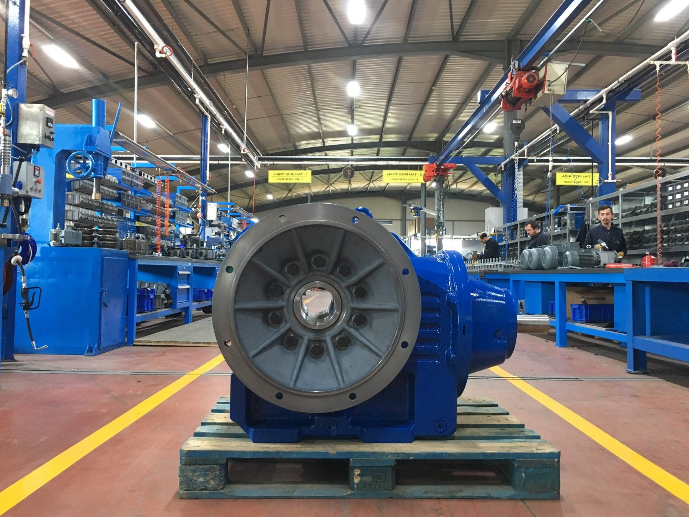
Final assembly, Pendik
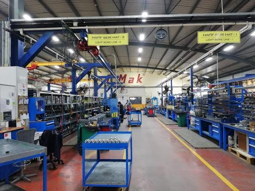
Production
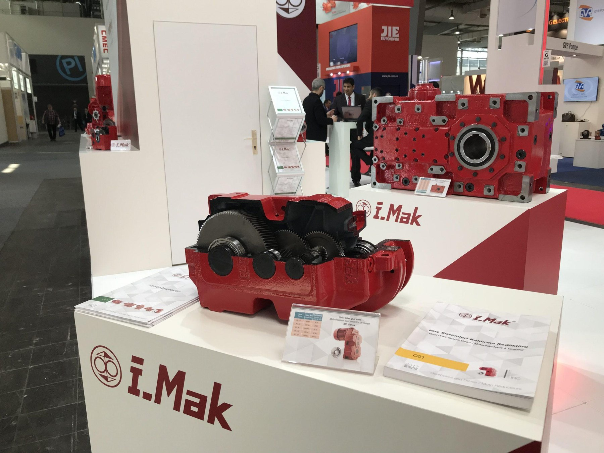
Hannover Messe
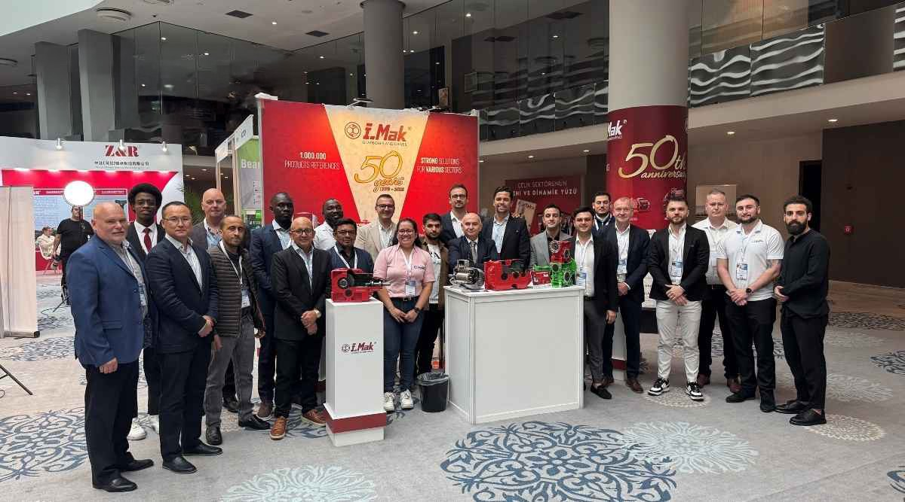
Distributor network
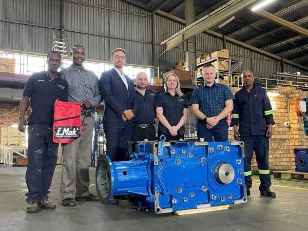
Assembly centre, South Africa
2 | www.imakreduktor.com
i.Mak Gearboxes and Drives
Gearboxes for mixing and agitating processes
Agitators, mixers and aerators run around the clock, often outdoors and in corrosive air. Their drives carry not only torque but also the bending moment and thrust of a long agitator shaft. i.Mak builds drives for exactly this duty – from a small geared motor on a dosing tank to a heavy vertical gear unit on a digester.
Characteristics / performance
Robust cast-iron housings designed for high output-shaft loads
Case-hardened helical gears in 16MnCr5 for quiet, efficient running
Reinforced output bearings and special shaft designs for agitator loads
Vertical foot- or flange-mounted designs, solid or hollow output shafts
Oil cooling, pump lubrication and expansion tanks for high thermal loads
Corrosion protection up to class C5 to EN ISO 12944
Matched i.Mak motors IE2 · IE3 · IE4, IP55 up to IP66
Typical applications
Surface aerators
Activated-sludge basins
Clarifiers and thickeners
Biogas digesters
Chemical reactors
Food and feed mixers
Grease and oil kettles
Slurry and mining tanks
Flocculators
Paint and coatings
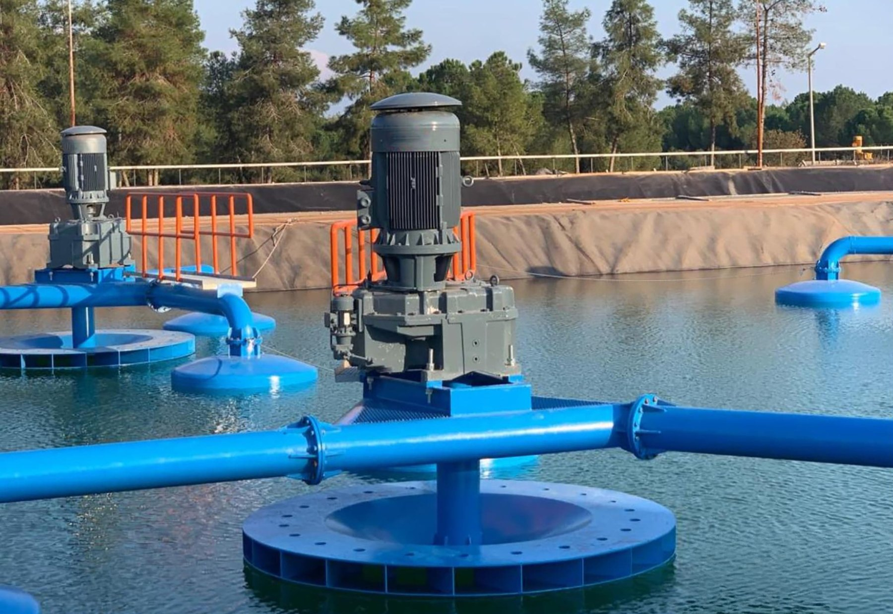
Surface aerator-mixers with i.Mak vertical gearboxes
Output torque by series
IRhelical
18 000 Nm
YPparallel shaft
18 000 Nm
IRKhelical-bevel
18 000 Nm
4DSMagitator unit
28 500 Nm
Aindustrial
33 000 Nm
MA / MKmonobloc
110 000 Nm
IPR / IPRKplanetary
332 800 Nm
1001 k10 k100 k1 M Nm
Maximum output torque per series from the i.Mak 2025 product overview (logarithmic scale).
Which i.Mak drive for which mixer?
Application
Typical speed
Recommended series
Torque range
Mounting
Small agitators, dosing and preparation tanks
20 – 300 min⁻¹
IR · IRK · IRSD
90 – 18 000 Nm
Flange, vertical
Flocculators, slow mixers, thickener drives
1 – 40 min⁻¹
YP · IRK · IPR
up to 332 800 Nm
Foot / flange, hollow shaft
Surface aerators, aerator-mixers
30 – 100 min⁻¹
4DSM
10 500 – 28 500 Nm
Vertical, foot
Large top-entry agitators, digesters, reactors
10 – 100 min⁻¹
MA · MK · A
880 – 110 000 Nm
Vertical, flange or foot
Very high torque at low speed, double-stage mixers
< 10 min⁻¹
IPR · IPRK planetary
1 100 – 332 800 Nm
Flange, foot, hollow shaft
Guide values only. Final selection depends on torque, service factor, shaft loads and thermal capacity – our application engineers size every agitator drive individually.
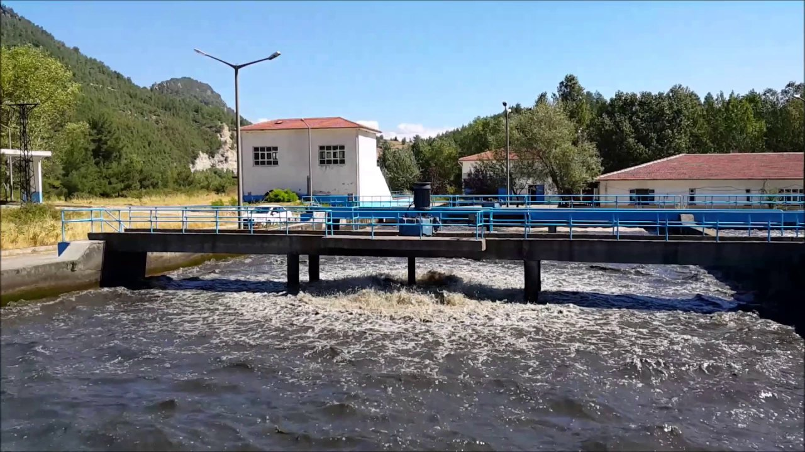
Aeration basin
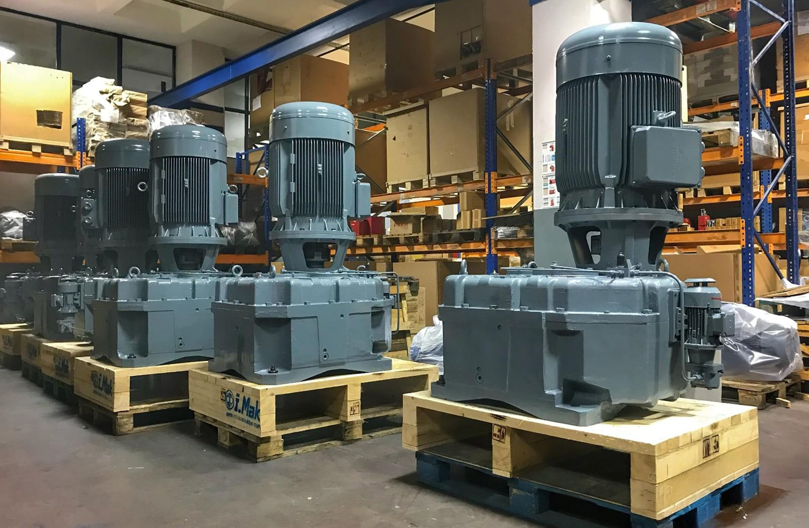
4DS units ready for site
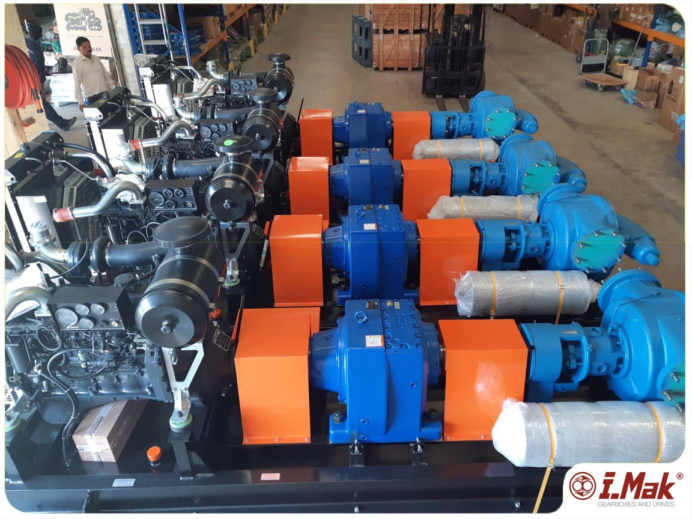
Oil and gas pump drives
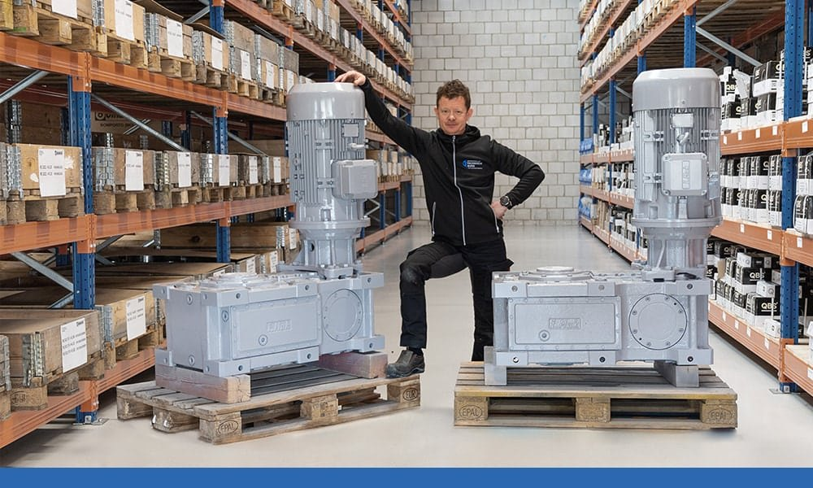
Mixer drives, 2 × 30 kW
www.imakreduktor.com | 3
i.Mak industrial gear units
4DSM – the vertical agitator and aerator unit
Designed for agitators, mixers and aerators, the 4DSM is i.Mak's answer to heavy and complex vertical duties. The motor sits on top, the solid output shaft points straight down into the basin or tank – a compact, self-contained drive that installs on a simple base frame.
Features
Three housing sizes: 4DSM 480, 615 and 750
Output torque 10 500 – 28 500 Nm
Ratios 10 – 180, motors 1.5 – 90 kW
Vertical, foot-mounted housing with solid output shaft Ø 105 – 125 mm
Very high permissible radial load on the output shaft – up to 116 kN
Several configurations to adapt to the machine and the site
Oil-temperature sensor, forced lubrication and fan or heat-exchanger cooling available
4DSM technical data
Size
Max. torque
Output shaft
Shaft length
Permissible radial load*
Ratio range
Motor power
4DSM 480
10 500 Nm
Ø 105 mm
180 mm
75 kN
10 – 180
1.5 – 90 kW
4DSM 615
22 800 Nm
Ø 115 mm
200 mm
98.5 kN
4DSM 750
28 500 Nm
Ø 125 mm
220 mm
116 kN
* Highest catalogue value per size, depending on ratio and motor. Full power and speed tables in the 4DSM catalogue. The related 4DS series covers 875 – 18 547 Nm with ratios 8 – 145.
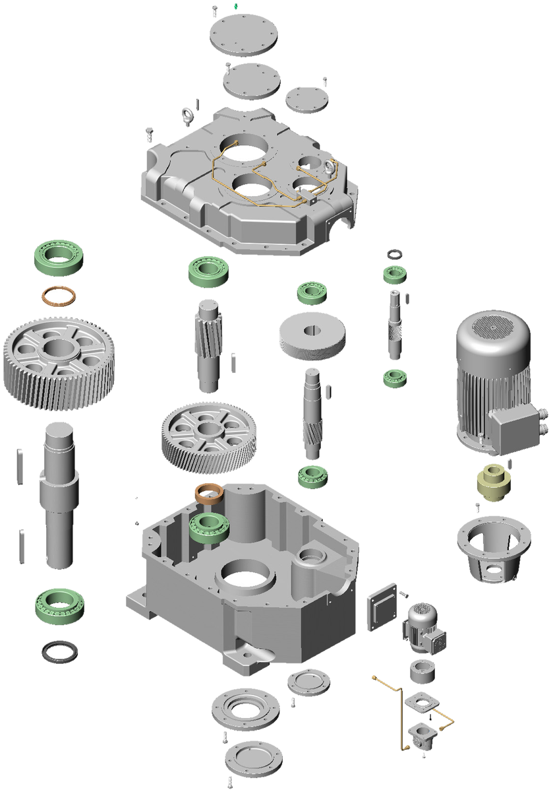
Modular construction
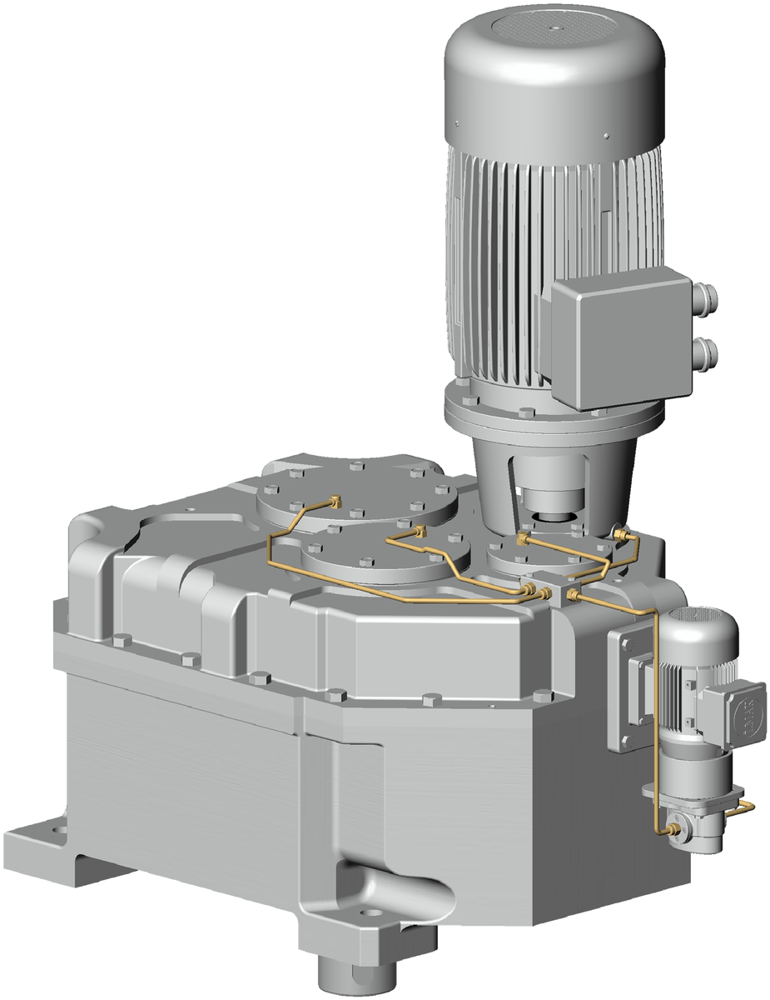
Engineered in 3D
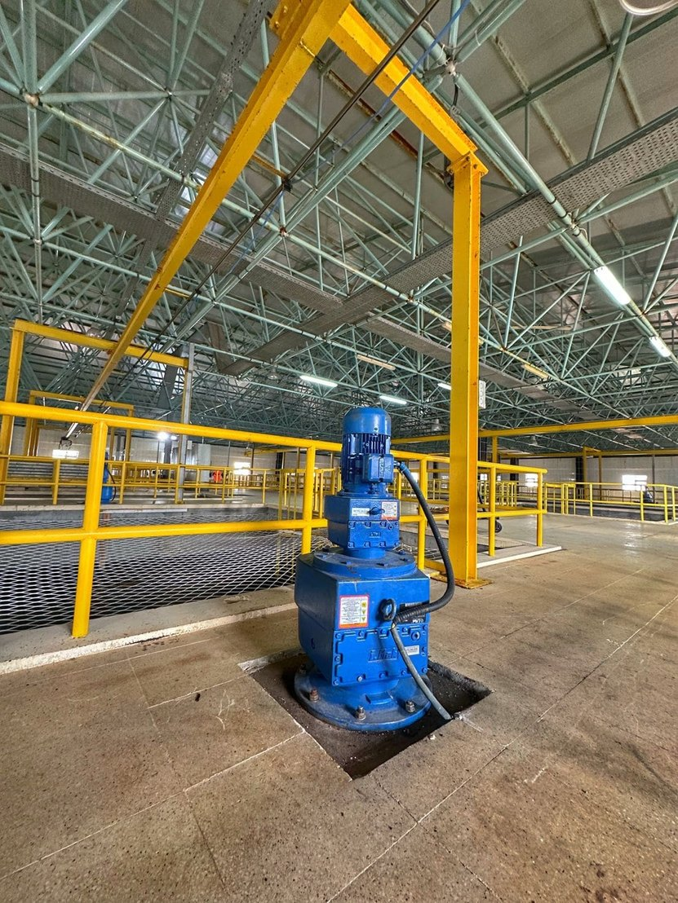
Vertical i.Mak drive on a treatment-plant tank
4 | www.imakreduktor.com
i.Mak industrial gear units
Heavy-duty drives for large agitators
Agitator drive systems
For large top-entry agitators, digesters and reactors i.Mak combines its monobloc industrial gear units with a matched motor, cooling and lubrication system into one complete, factory-tested drive. The output flange carries the agitator directly; reinforced output bearings take the radial and axial loads of the shaft.
MA / MK monobloc series
One-piece cast housing – rigid, oil-tight, machined in one set-up
MA helical (parallel shaft), MK helical-bevel (right angle)
Motor power 2.2 – 800 kW (MA) and 0.55 – 450 kW (MK)
Vertical versions with output flange for agitators
Motor IE3 / IE4
Fan cooler 244
Pump 216
MA monobloc housing
Agitator flange
Output shaft
MA / MK – sizes and torque
Size
MA max. torque
MK max. torque
Shaft
402 / 403
6 080 Nm
6 100 Nm
Ø 80
502 / 503
10 300 Nm
10 300 Nm
Ø 95
602 / 603
12 900 Nm
12 900 Nm
Ø 105
702 – 704
19 400 Nm
19 400 Nm
Ø 115
802 – 804
24 100 Nm
22 520 Nm
Ø 125
902 – 904
29 930 Nm
29 530 Nm
Ø 135
1002 – 1004
36 000 Nm
37 580 Nm
Ø 150
1102 – 1104
50 000 Nm
50 000 Nm
Ø 165
1202 – 1204
70 000 Nm
70 000 Nm
Ø 180
1302 – 1304
90 000 Nm
90 000 Nm
Ø 200
1402 – 1404
110 000 Nm
110 000 Nm
Ø 220
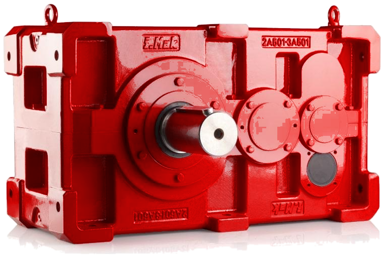
A series industrial gear units
Types
2A (2-stage), 3A, 4A
Torque
880 – 33 000 Nm
Ratios
3.6 – 48 (2A) · 7.6 – 487
Motor
0.37 – 160 kW
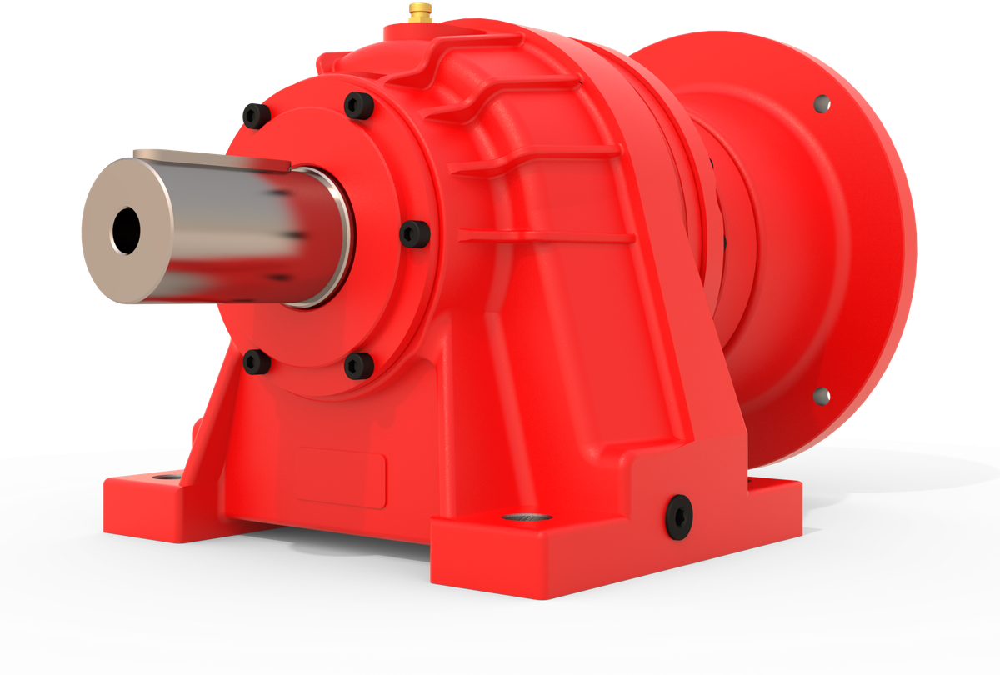
IPR / IPRK planetary gear units
Sizes
101 – 135 (18 sizes)
Torque
1 100 – 332 800 Nm
Ratios
3 – 9 793
Motor
0.25 – 500 kW
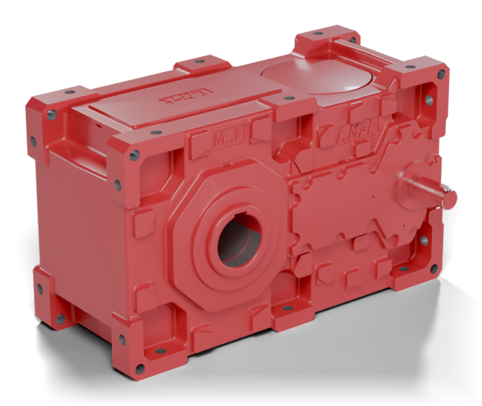
Shaft options
Solid shaft, hollow shaft with key or shrink disc, flanged output, special shaft dimensions and materials – all built to the agitator drawing.
www.imakreduktor.com | 5
i.Mak Gearboxes and Drives
From the impeller to the gearbox
Top-entry agitator drives
In a top-entry agitator the gear unit sits on a bridge or nozzle above the tank and drives one long shaft with one or several impellers. Besides torque, the shaft transmits the bending moment from uneven flow and the axial force of the impellers into the output bearings. That is why i.Mak sizes agitator drives on three values – torque, radial load and axial load – and not on power alone.
Single-stage and multi-stage mixing
Low-viscosity liquids are mixed with axial-flow hydrofoils at higher speed; viscous media, suspensions and gas dispersion need radial or multi-stage impellers at lower speed and higher torque. The gear ratio, the output speed and the shaft design follow from the process – the gearbox follows the impeller.
Sizing an agitator drive in six steps
Impeller power and speed → output torque T₂
Load class of the mixer (i.Mak load-characteristics table)
Service factor from daily operating hours
Radial and axial load on the output shaft, shaft deflection
Thermal capacity → cooling and lubrication option
Environment → seals, paint class, motor IP and ATEX
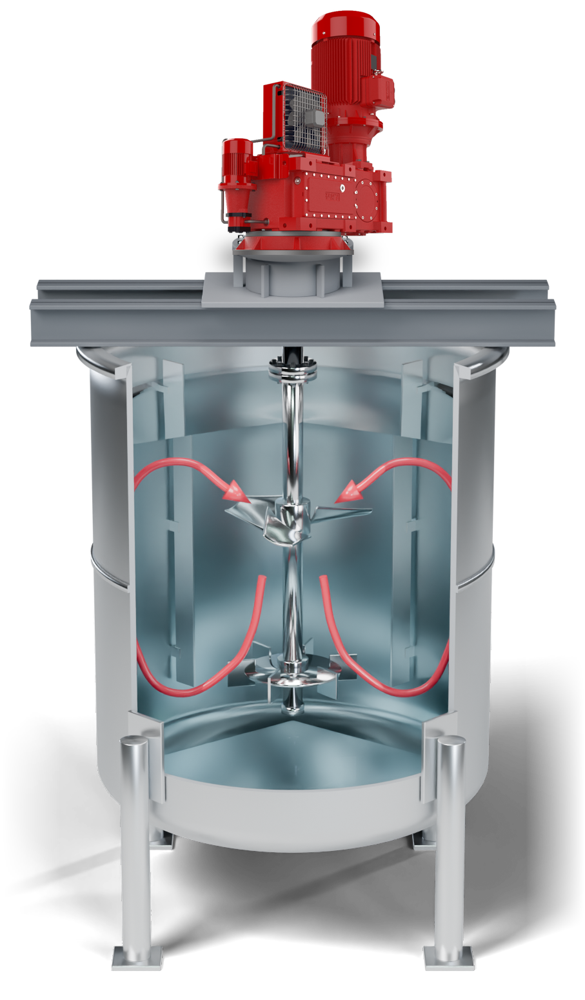
i.Mak agitator drive MA 703 + IEC motor
Bridge
Rigid coupling
Agitator shaft
Tank wall
Baffle
Hydrofoil axial impeller
Flow pattern
Disc turbine radial impeller
Support leg
FR radial load and FA axial load from the impellers act on the output bearings of the drive in addition to the torque.
Load class of mixing machines
Driven machine
Load class
Agitators – liquids
U – uniform
Agitators – semi-liquids
M – moderate shock
Mixers
M – moderate shock
Concrete mixers
M – moderate shock
From the load-characteristics table in the i.Mak catalogues.
Service factor – electric motor drive
Operating hours / day
U
M
H
0 – 3 h
0.80
1.00
1.50
3 – 10 h
1.00
1.25
1.75
10 – 24 h
1.25
1.50
2.00
A mixer running 24 h a day (class M) needs a gear unit with at least fs = 1.5.
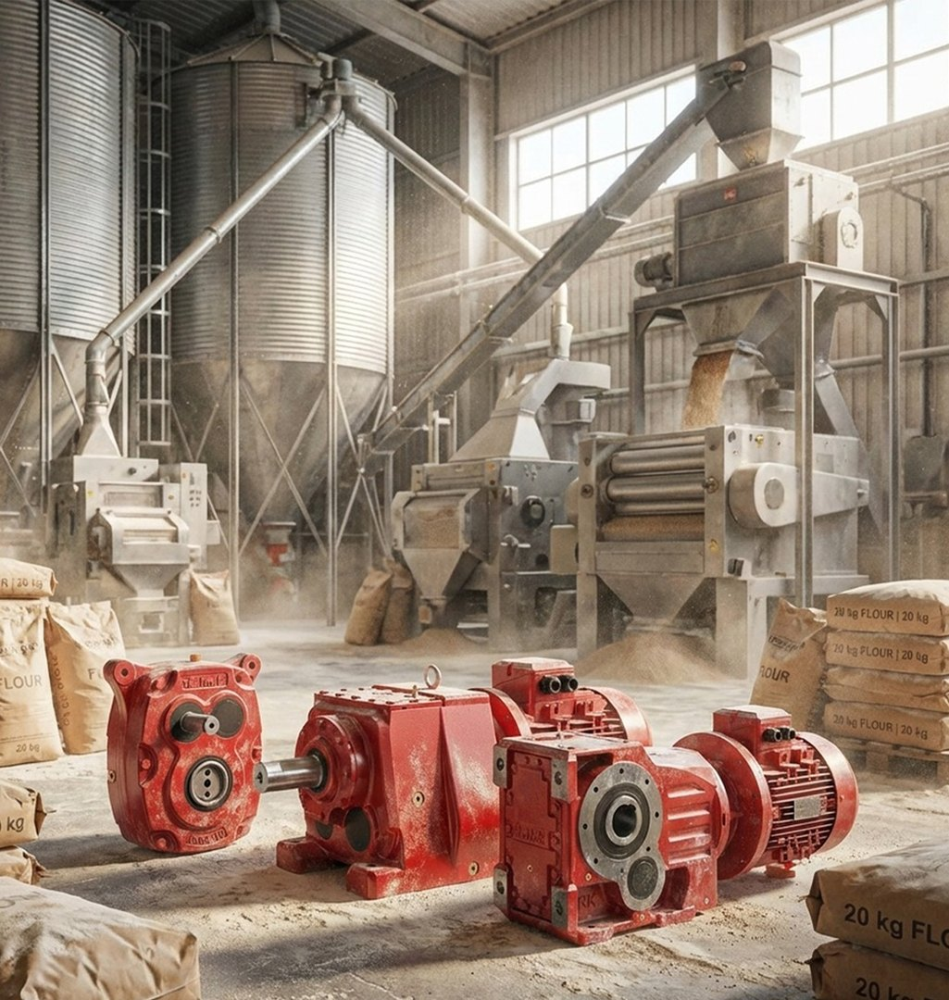
Feed and food processing
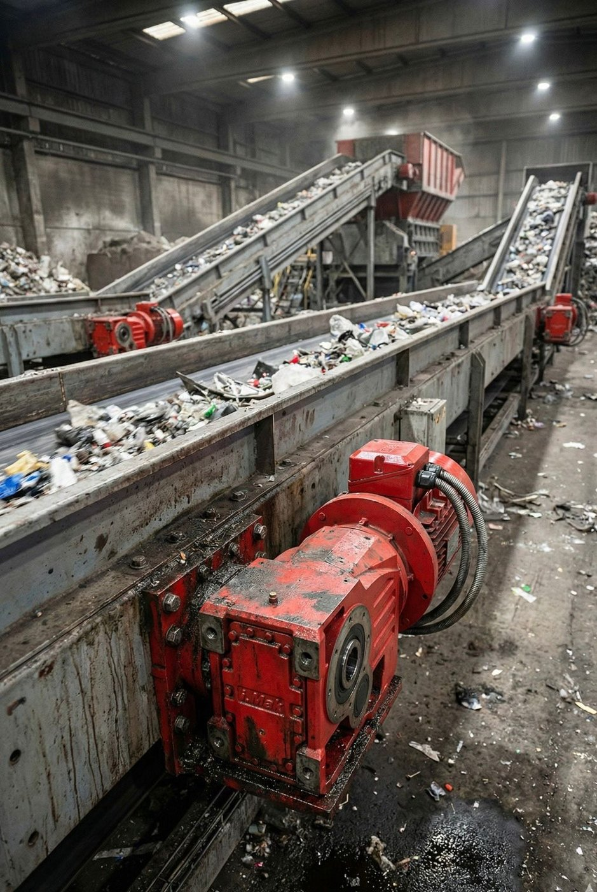
Recycling
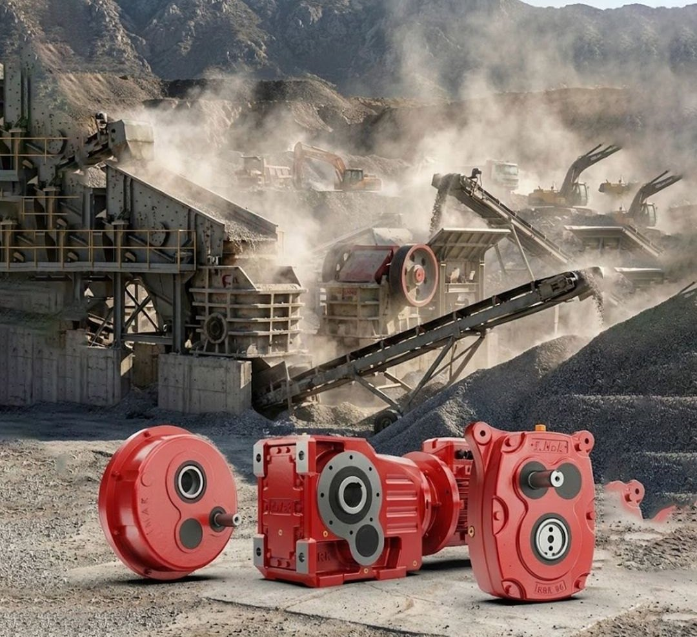
Mining and minerals
6 | www.imakreduktor.com
Industry solutions
Water and wastewater treatment
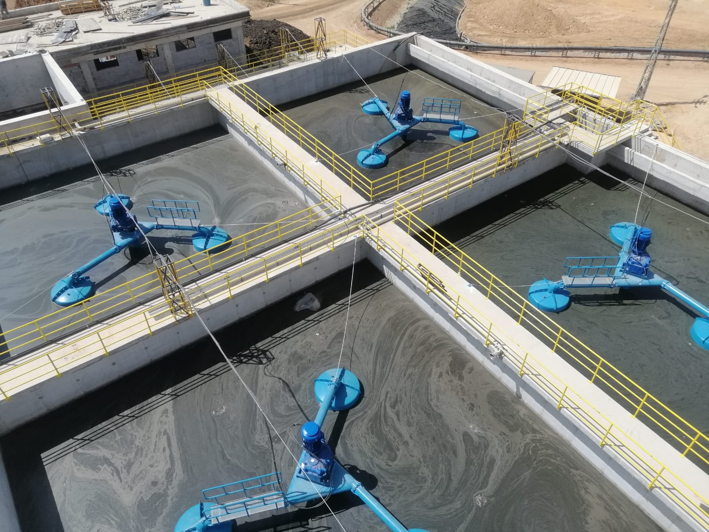
Surface aerators in an activated-sludge plant
Clean water is critical for cities and industry. i.Mak drives work through the whole treatment cycle – from screens and grit removal in the primary stage to aeration, mixing and sludge handling in the secondary stage.
Surface aerators and aerator-mixers – 4DSM / 4DS vertical units
Anoxic and anaerobic tank mixers – IR, IRK, YP geared motors
Flocculators and slow mixers – YP, IRK and IPR with high ratios
Clarifier and thickener drives – IPR planetary, IRSD helical-worm
Sludge digesters – MA / MK vertical agitator drives
Screens, conveyors and screw presses – IRK, IRNX, IRSD
Built for the outdoors
Anti-corrosion paint systems C2 to C5 (EN ISO 12944)
Viton seals, Nilos rings and special seal arrangements
Canopy for motors installed vertically outdoors
Cold-resistant oil down to –40 °C, heaters and thermistors
Easy assembly and maintenance – standard parts from local stock
Reference – mixer drive, the Netherlands (2024)
Two i.Mak industrial gear units, each driven by a 30 kW motor, supplied through our Dutch partner for a large mixing application.
Vertical drive on a tank deck
Aerator-mixers in a lagoon
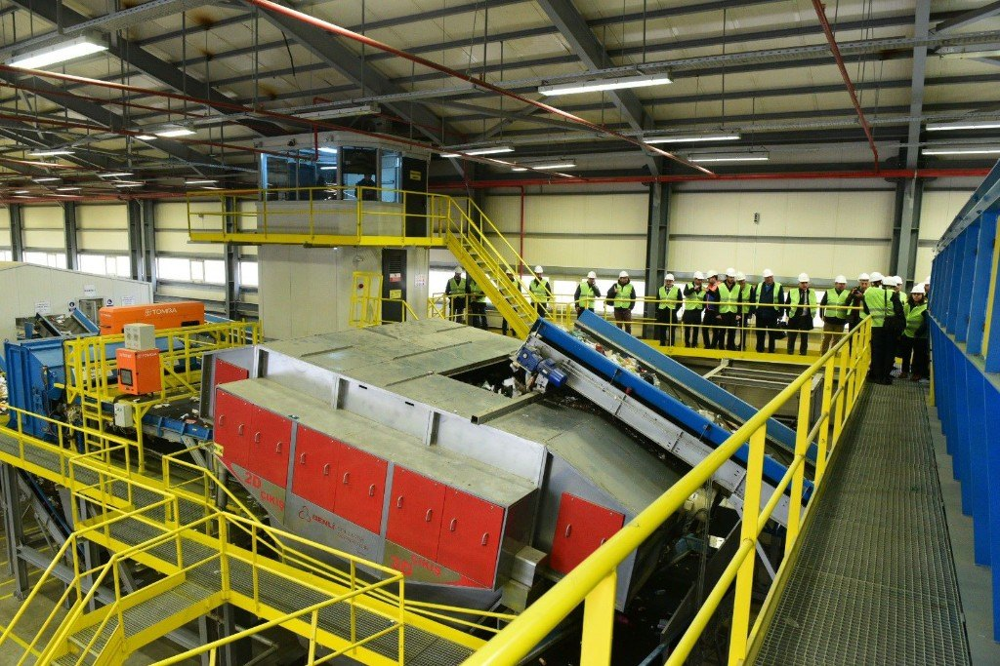
Waste treatment line
www.imakreduktor.com | 7
i.Mak Gearboxes and Drives
Output shafts, bearings and sealing
The output stage decides the life of an agitator drive. i.Mak adapts bearings, shafts and seals to the loads and the medium of every application – from the standard catalogue design to a fully customised output.
Bearing options
Reinforced output bearing for higher radial and axial loads (231)
Reinforced input bearing for belt or coupling loads (232)
Special bearing brands and dimensions on request (233 / 234)
Backstop for clockwise or anticlockwise rotation (235 / 236)
Shaft options
Special shaft dimensions and shaft materials (111 / 112)
Hardened shafts for wear-critical applications (113)
Shafts with thread or multiple keys (114 / 115)
Hollow shafts with key or shrink disc; coupling connection (137)
Sealing options
Viton seals for high temperature and aggressive media (225)
Nilos rings – additional protection against dust and splash water (218)
Special seal configurations, sizes and brands (221 – 226)
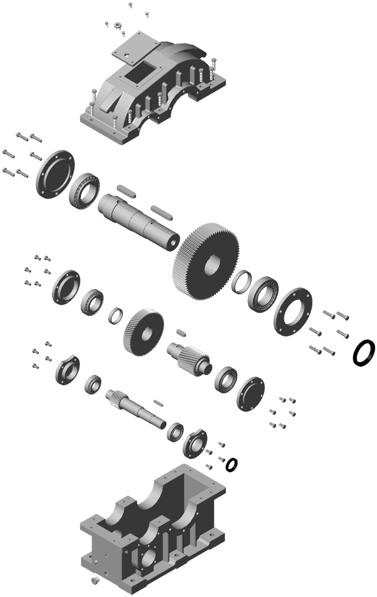
Industrial gear unit – exploded view
Why bearing spacing matters
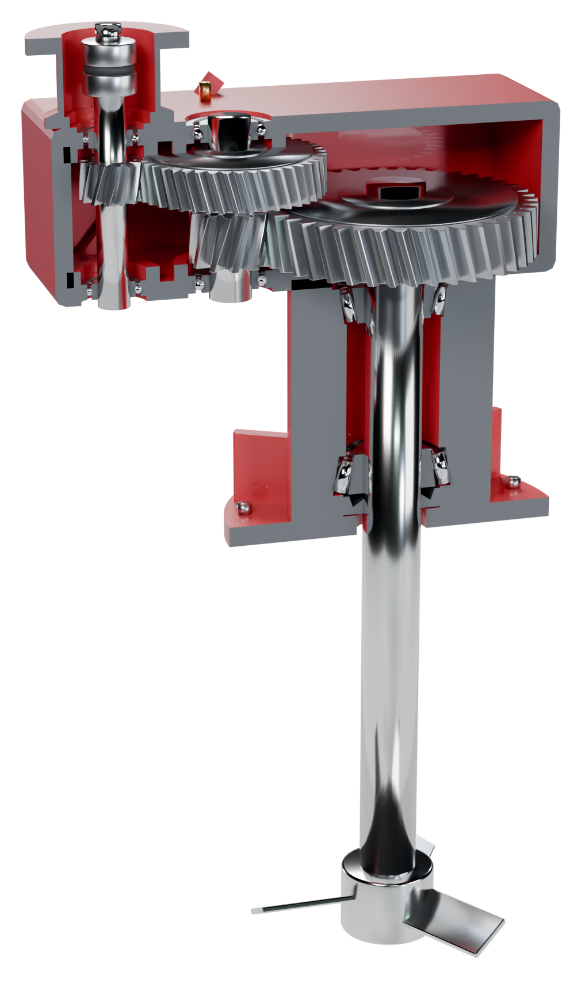
Motor adapter + coupling
Housing GG cast iron
Ball bearings
Gear Z2
Input pinion Z1
Output gear Z4
Pinion Z3
Upper bearing tapered roller
Lower bearing tapered roller
Shaft seal
Mounting flange
Agitator shaft
Impeller hub
The agitator shaft acts as a lever: a radial force FR at distance x from the lower bearing creates a bending moment that the bearing pair with spacing a must carry. The larger a and the stronger the bearings, the higher the permissible load and the smaller the deflection at the impeller – often without an additional bearing in the tank.
Higher permissible radial and axial loads
Longer bearing life and lower seal wear
Less shaft deflection at the impeller
i.Mak catalogues state the permissible radial load for every output speed. Our engineers check the combined load case of your agitator on request.
8 | www.imakreduktor.com
i.Mak Gearboxes and Drives
Lubrication, cooling and monitoring
Mixing processes often run continuously at high torque. The right oil, enough cooling and simple monitoring keep the drive inside its thermal limits and make maintenance predictable.
Lubrication options
211
Synthetic oil
VG 220 (SHC 630) for long oil-change intervals and high temperatures
212
Food-grade oil
VG 220 (CIBUS 220) for food, beverage and feed mixers
213
Cold-resistant oil
Suitable down to –40 °C for outdoor plants in cold climates
216
Pump lubrication
Auxiliary pressure lubrication for vertical shafts and upper bearings
217
Expansion tank
Compensates oil volume in fully filled vertical housings
Cooling options
244
Fan cooling
Fan on the input shaft or electric fan cooler with oil circuit
245
Radiator cooling
Air-oil radiator for high thermal power without cooling water
247
Plate heat exchanger
Compact water-oil cooling for high continuous loads
248
Tube heat exchanger
Robust shell-and-tube cooler for process water
249
Brazed heat exchanger
Brazed plate cooler – maximum performance in minimum space
Monitoring and sensors
OTS
Oil temperature sensor
Monitors the oil sump and warns before overheating
441
PTC thermistor
Winding protection for the motor; bimetal switch available (442)
443
Pressure sensor
Supervises forced-lubrication and cooling circuits
431–439
Encoder
HPL, HTL or TTL pulse encoders, 100 – 2048 pulses
ATEX
Explosion protection
ATEX-certified gear units for hazardous areas
Corrosion protection to EN ISO 12944
Class
Environment
Paint system
Total
C2
Indoors, or outdoors under a roof; controlled humidity, low contamination
Zinc-phosphate epoxy + aliphatic acrylic PU
120 µm
C3
Indoors and outdoors with regular weathering, humidity and contamination
Zinc-phosphate epoxy + aliphatic acrylic PU
160 µm
C4
High humidity and chemical contamination – typical for treatment plants
Zinc-phosphate epoxy + high-build epoxy + PU
240 µm
C5
Permanent humidity, aggressive atmosphere, chemical cleaning
Multi-layer epoxy system + PU top coat
320 µm
Further options: epoxy (253), acrylic outdoor (254), water-based (255) and special colours (251).
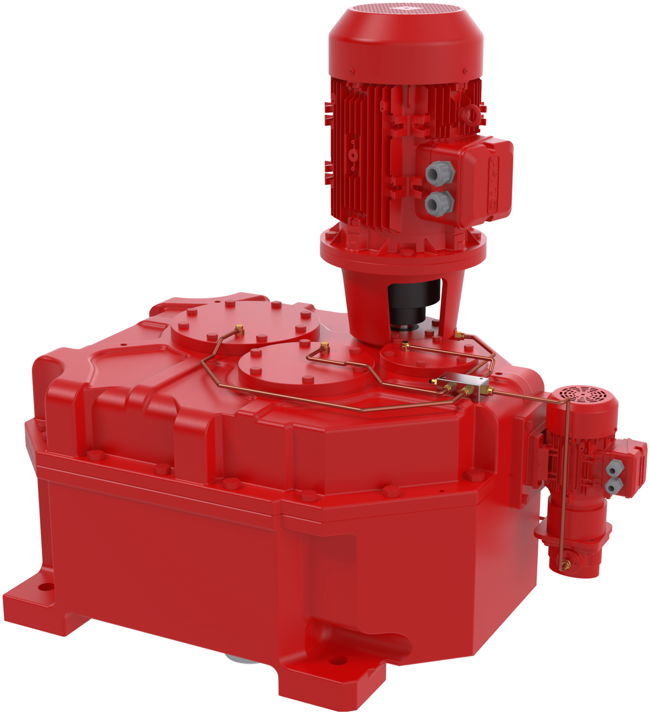
4DSM with auxiliary units
Need a special design?
Special housings and materials (241/242), non-catalogue ratios (262), special voltages and frequencies (311/312) and insulation class H (332) – tell us your process, we build the drive.
Case-hardened helical teeth for high load capacity
Developed to international standards, AGMA member
Low noise and vibration in long, heavy operation
Housing and shafts
Rigid GG22 cast-iron housings, machined in one set-up
C45 output shafts – solid or hollow
Viton shaft seals for demanding environments
Branded rolling bearings sized for long life
Production and test
Machining and assembly in Pendik, Istanbul
Stock and assembly centres for fast delivery
ISO 9001 quality management
Spare parts lists and manuals online
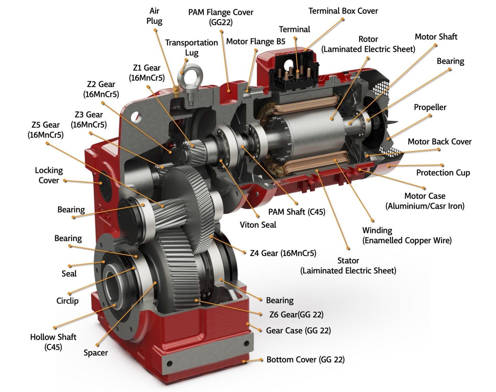
YP parallel-shaft helical geared motor
Housing sizes
10
Torque
130 – 18 000 Nm
Ratios
3.5 – 32 000
Power
0.12 – 200 kW
Output
Solid or hollow shaft, foot or flange
Compact and slim – the parallel-shaft design brings very low output speeds for flocculators and slow mixers with a hollow shaft that slides straight onto the agitator shaft.
10 | www.imakreduktor.com
i.Mak Gearboxes and Drives
Geared motors for smaller mixers and agitators
For dosing tanks, preparation tanks and small agitators i.Mak offers a complete range of geared motors – one standard platform of motors, flanges and options across all families.
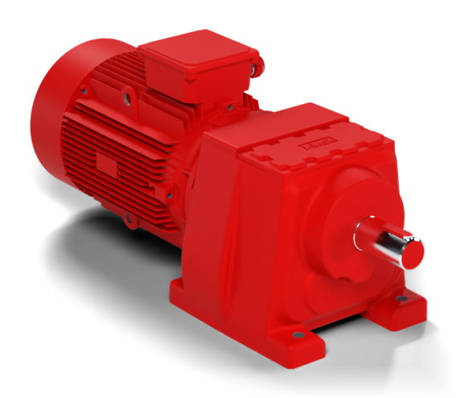
IR helical geared motors
Torque
90 – 18 000 Nm
Speed
2.4 – 852 min⁻¹
Power
0.12 – 160 kW
In-line, foot or flange – the classic vertical agitator drive
IRK helical-bevel geared motors
Torque
180 – 18 000 Nm
Speed
0.17 – 214 min⁻¹
Power
0.12 – 200 kW
Right-angle drive with high efficiency, hollow or solid shaft
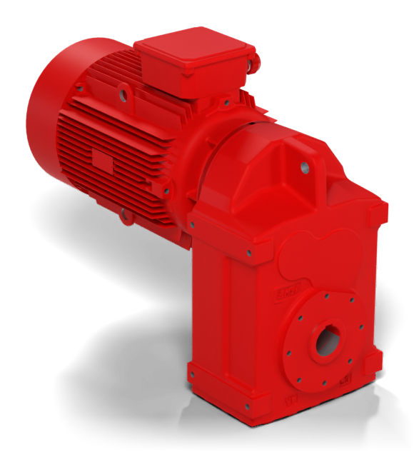
YP parallel-shaft geared motors
Torque
130 – 18 000 Nm
Speed
2.4 – 391 min⁻¹
Power
0.12 – 200 kW
Slim design for flocculators and slow mixers
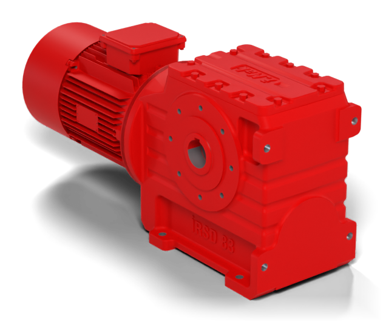
IRSD helical-worm geared motors
Torque
125 – 4 820 Nm
Ratios
20 – 429
Power
0.12 – 11 kW
High ratios in one compact unit for slow scrapers
i.Mak three-phase motors
Frame sizes
63 – 355
Poles
2 · 4 · 6 · 8
Efficiency
IE2 · IE3 · IE4
Protection
IP55 · IP56 · IP65 · IP66
Mounting
B3 · B5 · B14 · B35 · NEMA C
Insulation
class F, class H option
Motor options
Brake 24 V or 220 V, single or double disc, hand release
Insulated bearings, bearings for hot or cold environments
Re-greasing nipples for large frames
Special voltages and frequencies
Double shaft and single-phase motors
Input options for every family
▸ With i.Mak motor
▸ With motor and PAM flange
▸ Without motor, free input shaft
▸ Without motor, PAM / IEC flange
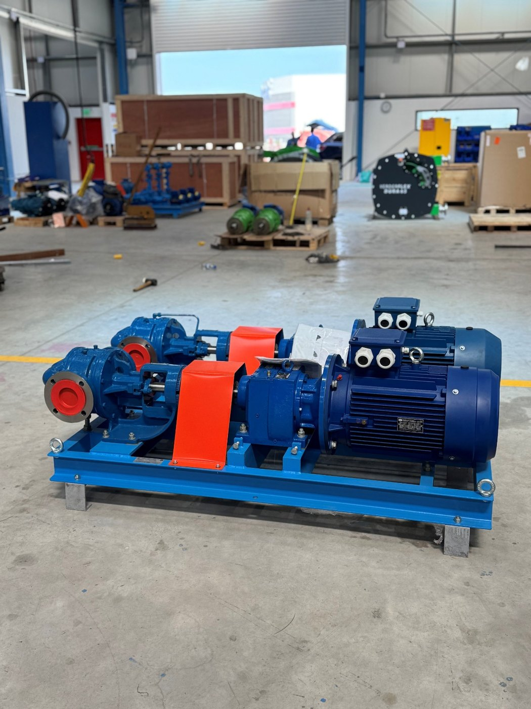
Geared motor on a pump skid
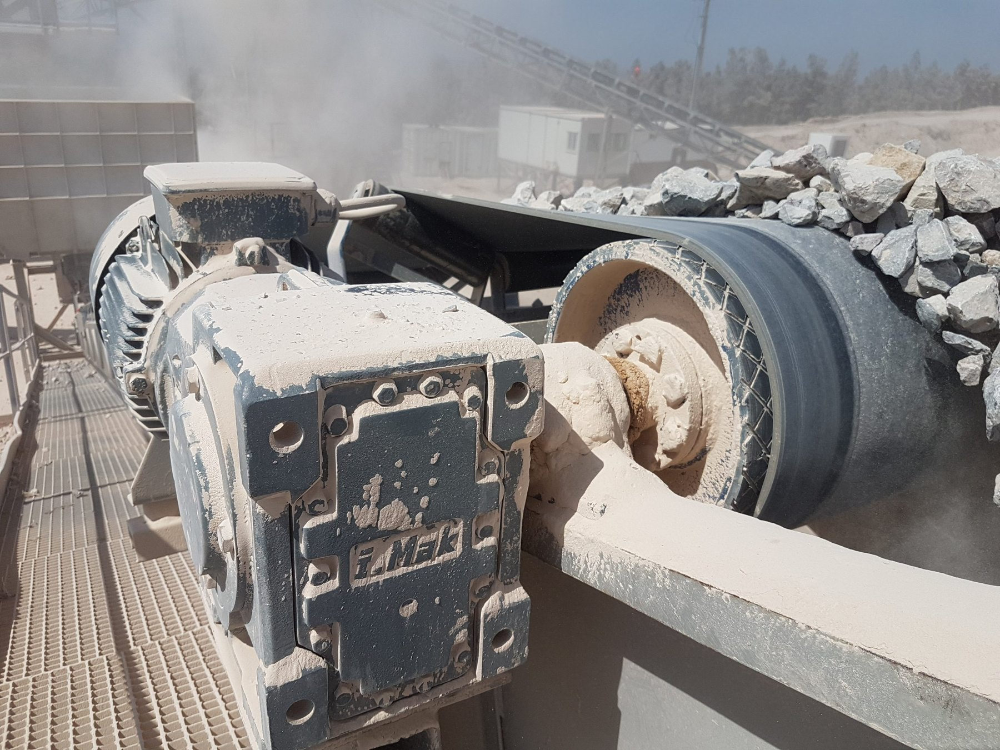
Mining conveyor
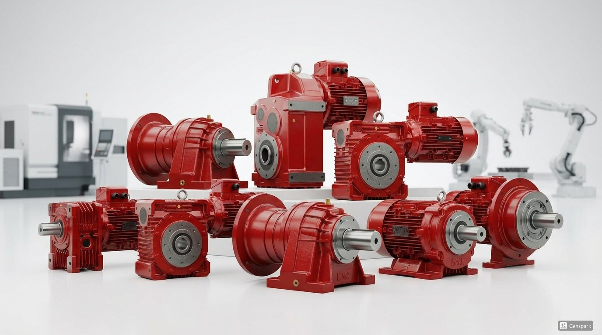
One platform, many families
www.imakreduktor.com | 11
i.Mak agitator drives are part of one modular product family – from 0.12 kW geared motors to industrial gear units of more than 300 000 Nm. Standard motors, flanges, seals and options are shared across the whole range, so every mixing application gets a drive that is technically and commercially right.
i.Mak Gearboxes and Drives Product portfolio
Complete drives from modular components
In-house production in Istanbul since 1973
More than 1 000 000 product configurations
Stock and assembly centres on four continents
Short delivery times for standard units and spare parts
ATEX versions available
i-Guide online selection at iguide.imakreduktor.com
24/7 engineering support in six languages
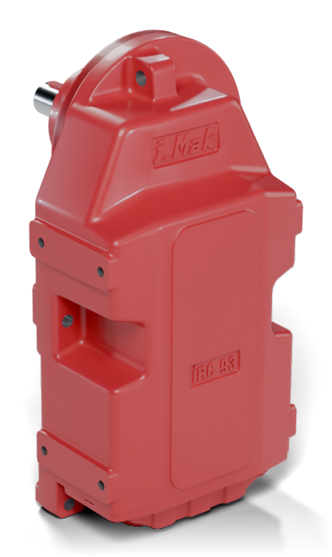
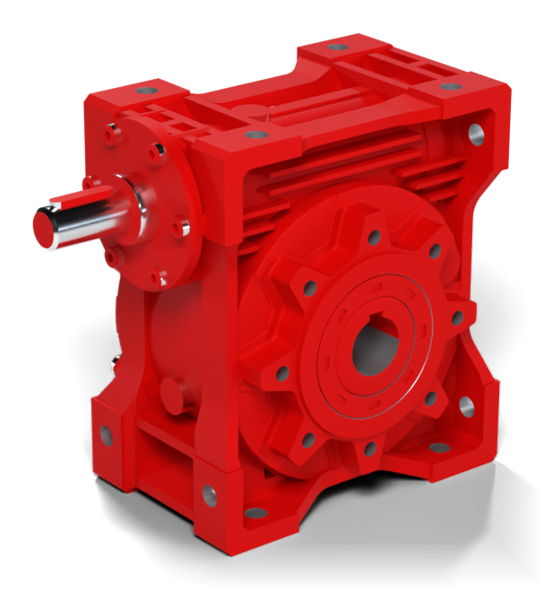
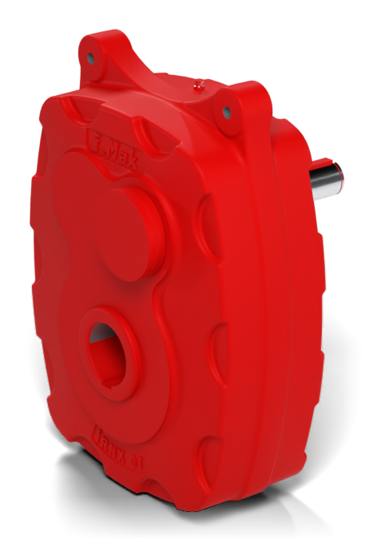
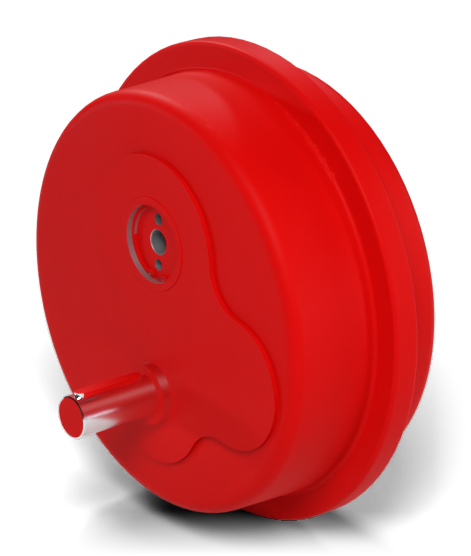
MA monobloc
MK monobloc
4DSM agitator
IPR planetary
IRK
IR
YP
IRSD
IRC hoist
Motors IE2–IE4
S aluminium
IRNX
IRO
EN
Headquarters and factory
İ.MAK Redüktör San. ve Tic. A.Ş.
Şeyhli Mah. Sanayi Cad. No:1
34906 Pendik / İstanbul – Türkiye
T: +90 216 378 03 26
imak@imakreduktor.com · export@imakreduktor.com
www.imakreduktor.com
i.Mak worldwide
USA · Webster, Texas Morocco · Casablanca Egypt · 6th of October City South Africa · Germiston Spain · Ponte Caldelas Poland · Kochlice India · Chennai France · Nuaillé Italy · Reggio Emilia Netherlands · Venlo United Kingdom Russia · Moscow region Kazakhstan · Karaganda Ukraine · Bila Tserkva Canada · Quebec Brazil · São Paulo Colombia · Bogotá Ecuador · Guayaquil Chile · Hualpén
Producing powerful solutions since 1973EN – Mixing and agitating processes · Edition 2026